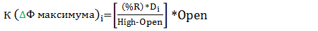

Процедура открытия короткой позиции.
- Проверяем силу приказа:
- Либо на свече ЕСТЬ четыре подряд гистограммы MACD красного цвета, то в графе «Примечания» указываем: приказ сильный;
- Либо на свече НЕТ четырех подряд гистограммы MACD красного цвета, то в графе «Примечания» указываем: приказ слабый.
- 1. Если свеча приказа является абсолютным крестом, то приказ отменяется.
- 2. Только при открытии позиции: проверяем потенциал текущего графика:
- Либо гистограмма MACD НЕ подтверждает позицию, т.е. закрывается выше сигнальной линии, то приказ отменяется;
- Либо гистограмма MACD подтверждает позицию, т.е. закрывается ниже сигнальной линии, то переходим к следующему пункту.
- 3. Только при открытии позиции. На вышестоящем графике:
- Либо на текущей свече ADX ≤ 20 и понижается;
- Либо на предыдущей свече ADX ≤ 20 и понижается, То:
- ➠ Либо условие выполнено, то приказ отменяется;
- ➠ Либо оба условия не выполнены, то к следующему пункту.
- 4. Свеча слабого приказа:
- Если Low свечи меньше или равен значению любого уровня цели W;
- Если Close свечи больше или равен значению того же уровня цели W, То:
- ➠ Либо условие не выполнено, то к следующему пункту;
- ➠ Либо условие выполнено, то приказ отменяется.
- 5. Проверка свечи приказа/решения по линиям Боллинджера:
- 5.1. Свеча приказа. Мы находимся в «деньгах» (достижение ЛБ направленную в противоположную сторону):
- Если свеча приказа достигла нижнюю ЛБ;
- Если нижняя ЛБ направлена вверх, То:
- ➠ Либо условие не выполнено, то к следующему пункту;
- ➠ Либо свеча приказа закрывается выше ЛБ, то приказ отменяется;
- ➠ Либо свеча приказа закрывается ниже ЛБ, то после фактического открытия позиции выставляем SL = Low(свечи) + (%SL).
- 5.2. Свеча приказа:
- Если свеча приказа достигла нижнюю ЛБ;
- Если нижняя ЛБ направлена вверх, То:
- ➠ Либо условие не выполнено, то к следующему пункту;
- ➠ Либо свеча приказа закрывается выше ЛБ, то:
- ➠ Либо свеча приказа закрывается ниже ЛБ, то после фактического открытия выставляем SL = Low(свечи) + (%SL).
- 5.3. Свеча решения:
- Если Свеча решения достигла нижнюю линию Боллинджера;
- Если нижняя ЛБ направлена вверх, То:
- ➠ Либо условие не выполнено, то к следующему пункту;
- ➠ Либо свеча решения закрывается выше ЛБ, то после фактического открытия выставляем SL = High(свечи + (%SL);
- ➠ Либо свеча решения закрывается ниже ЛБ, то после фактического открытия выставляем SL = Low(свечи) + (%SL).
- 5.4. Только при открытии позиции. Свеча приказа: (изменение направления)
- Если свеча находится в расходящихся ЛБ4+;
- Если свеча приказа в движении;
- Если третья слева свеча от ЛБ1:
- закрывается выше SMA(10);
- является свечой расхождении ЛБ4+;
- находится в «деньгах»;
То:
- ➠ Либо условие не выполнено, то к следующему пункту;
- ➠ Либо условие выполнено приказ отменяется.
- 5.5. Свеча приказа/решения для Ересь:
- Если свеча находится в ЛБ4+;
- Если свечи находится в движении;
- Если закрывается со стороны позиции от SMA(10);
- Если, начиная от ЛБ1, индикатор ADX повышается;
- Если на текущем и вышестоящем графиках гистограммы MACD с одной стороны от белой линии;
- Если на текущем и вышестоящем графиках гистограммы MACD одного цвета;
- Если на Close свечи не работает Take-profit (цели), То:
- ➠ Либо условие не выполнено, то к следующему пункту;
- ➠ Либо проверяем:
- Если ближайшим слева от свечи приказа/решения является разрешающий фрактал (зеленый максимум) , то стоп заявку выставляем на уровне этого фрактала;
- Если ближайшим слева от свечи приказа/решения является запрещающий фрактал (красный минимум), то стоп заявку выставляем на свече приказа.
- 5.1. Свеча приказа. Мы находимся в «деньгах» (достижение ЛБ направленную в противоположную сторону):
- 6. Свеча приказа. Согласование с ADX и kST.
- Если на предыдущей свече значение АДХ ≤ 20 и понижается;
- Если на текущей свече ЛБ сонаправлены или сходятся, То:
- ➠ Либо хотя бы одно условие не выполнено, то переходим к следующему пункту;
- ➠ Либо на предыдущей свече значение пунктира kST ≥ 20%, то,
- ➠ Либо на предыдущей свече значение пунктира kST < 20%, то приказ отменяется .
- 7. Безотлагательное открытие/добавление короткой позиции.
- 7.1. На свече приказа при открытии короткой позиции:
- Если свеча приказа является третьей подряд закрашенной свечой;
- Если тень вниз каждой свечи строго меньше размеров тела;
- Если Close каждой свечи строго ниже Low предыдущей свечи;
- Если Open каждой свечи строго ниже Close предыдущей свечи, То:
- ➠ Либо условия выполняются, то переходим к пункту 1.8.
- ➠ Либо хотя бы одно условие не выполняется, то переходим к следующему пункту.
- 7.2. На свече приказа/решения при открытии и добавлении короткой позиции:
- Если текущая свеча закрашенная;
- Если первая слева от текущей, свеча закрашенная;
- Если одна из закрашенных свечей лысая;
- Если вторая слева от текущей свеча прозрачная;
- Если третья слева от текущей свеча прозрачная ;
- Если одна из прозрачных свечей лысая;
- Если ни одна из свечей не является крестом;
- Если Close текущей свечи строго ниже Low третьей слева свечи, То:
- ➠ Либо условия выполняются, то переходим к пункту 1.9.
- ➠ Либо хотя бы одно условие не выполняется, то переходим к следующему пункту.
- 7.3. На свече приказа/решения при открытии и добавлении короткой позиции:
- Если текущая свеча закрашенная;
- Если текущая свеча лысая;
- Если первая слева от текущей свеча прозрачная;
- Если вторая слева от текущей свеча закрашенная;
- Если ни одна из свечей не является крестом;
- Если Close текущей свечи строго ниже Low первой слева свечи;
- Если Close текущей свечи строго ниже Low второй слева свечи, То:
- ➠ Либо условия выполняются, то переходим к пункту 1.9.
- ➠ Либо хотя бы одно условие не выполняется, то переходим к следующему пункту.
- 7.4. На свече приказа/решения при открытии и добавлении короткой позиции:
- Если текущая свеча закрашенная;
- Если первая слева от текущей свеча закрашенная;
- Если одна из закрашенных свечей лысая;
- Если вторая слева от текущей свеча прозрачная ;
- Если третья слева от текущей свеча закрашенная;
- Если ни одна из свечей не является крестом;
- Если Close текущей свечи строго ниже Low второй слева свечи;
- Если Close текущей свечи строго ниже Low третьей слева свечи, То:
- ➠ Либо условия выполняются, то переходим к пункту 1.9.
- ➠ Либо хотя бы одно условие не выполняется, то переходим к следующему пункту.
- 7.5. На свече приказа/решения и на первой слева свече от свечи решения при добавлении короткой позиции:
- Если свеча приказа является второй подряд закрашенной свечой;
- Если тень вниз каждой свечи строго меньше размеров тела;
- Если Close свечи приказа строго ниже Low предыдущей свечи;
- Если Open свечи приказа ниже или равен CLOSE предыдущей свечи;
- Если гистограмма MACD закрывается ниже белой сигнальной линии, То:
- ➠ Либо условия выполняются, то переходим к пункту 1.8.
- ➠ Либо хотя бы одно условие не выполняется, то переходим к пункту 1.10.
- 7.1. На свече приказа при открытии короткой позиции:
- 8. Дополнительная проверка на свече приказа/решения после выполнения одного из пунктов от 1.7.1 или 1.7.5:
- Либо на свече ADX > 20 и повышается;
- Либо на свече ADX ≤ 20 и:
- либо на текущей свече ADX повышается;
- либо на предыдущей свече ADX повышается;
То:
- ➠ Либо одно условие выполнено, то:
- ➠ Либо условия не выполняются, то переходим к пункту 1.11.
- 9. Для приказа/решения после выполнения одного из пунктов от 1.7.2 до 1.7.4:
- 10. ХХХ
- 11. Свеча приказа/решения. Проверяем все свечи, начиная со свечи приказа на Si(2xSL):
- Если свеча достигла нижнюю ЛБ;
- Если на свече достижения ЛБ сонаправлены с позицией или сходятся;
- Если свеча находится в движении;
- Если свеча закрывается со стороны позиции от SMA(10);
- Если на свече достижения гистограмма MACD подтверждает позицию, то:
- ➠ Либо хотя бы одно условие не выполняется, то переходим к следующему пункту;
- ➠ Либо условия выполняются, то это сигнальная свеча Si (2хSL):
- Для свечи приказа/решения:
- в графе «Дата ожидания» указываем: следующую дату после Si(2xSL), Процедура диапазона по сигналу (…) с пункта 4. Сигнал (…) обводим.
- Для свечи приказа:
- в графе «Дата ожидания» указываем: следующую дату, расчетная свеча с пункта 10.
- в графе «Примечания» указываем: приказ отложенный.
- Для свечи приказа/решения:
- 12. Свеча приказа/решения.
- Либо свеча находится в «деньгах», то:
- Либо свеча находится в короткой позиции, то:
- 13. Фактическая продажа:
- Если активирована (работает) заявка Take-profit (цели):
- Безотлагательные приказы для добавления позиции выполняются;
- Фактические решения для отложенного добавление позиции отменяются.
- Если работает SL𝛂 или SLGM:
- Либо свеча приказа или решения для безотлагательного добавления позиции совпадает со свечой достижения;
- Либо есть приказ на безотлагательное добавление позиции;
- Либо для длинной позиции Close свечи приказа строго выше уровня жадности GМ или α;
- Либо для короткой позиции Close свечи приказа строго ниже уровня жадности GМ или α;
- Либо закрыты все заявки Take-profit(ω); то:
- ➠ Либо условие выполнено:
- Позиция добавляется;
- В качестве SL для этого добавления используем SLGМ или SLα;
- В заявке Take-profit(ω) используем отступ %ω нижестоящего графика;
- Корректировку заявки Take-profit(ω) для этого добавления при повторной активации текущего уровня α не производим.
- ➠ Либо условие НЕ выполнено, то приказы и решения добавление позиции отменяются.
- Для открытия/добавления короткой позиции:
После проверки по пунктам 17 - 19, в графе «Дата ожидания» указываем: следующую дату, продаем акции по параметрам расчетной свечи. - Для процедуры Две последних:
- В графе «Дата ожидания» указываем: следующая дата, продаем акции, оставляя по одному лоту в каждой заявке ТП;
- В графе «Дата ожидания» указываем: ждем первую гистограмму MACD, которая подтверждает позицию, а предыдущая не подтверждает позицию, Процедура восстановления позиции после 2х2, с пункта 1.
- Если на текущей свече есть незавершенные приказы, то для каждого приказа в графе «Дата ожидания» указываем: следующую дату, Диапазон на продажу по сигналу (…) с пункта 4. Сигнал (…) обводим.
- Если активирована (работает) заявка Take-profit (цели):
Проверка свечи приказа/решения на движение и диапазон.
- Определение Диапазона для текущей свечи:
- Если Close текущей свечи меньше или равен High второй слева свечи;
- Если Close текущей свечи больше или равен Low второй слева свечи;
- Если Close первой слева свечи меньше или равен High второй слева свечи от текущей;
- Если Close первой слева свечи больше или равен Low второй слева свечи от текущей, то:
- ➠ Либо условие выполняется, то в графе «Примечание» указываем:
- текущая свеча в Диапазоне, переходим к пункту 2.2;
- Для свечи приказа указываем: приказ отложенный.
- ➠ Либо хотя бы одно условие не выполняется, то переходим к пункту 2.1.
- 1. Дополнительная проверка Диапазона для текущей свечи:
- Либо свеча решения, в виде креста;
- Либо свеча приказа, в виде относительного креста;
- Либо на свече приказа ADX ≤ 20 и:
- либо на текущей свече ADX понижается;
- либо на предыдущей свече ADX понижается;
то:
- ➠ Либо условие выполнено, то в графе «Примечание» указываем:
- текущая свеча в Диапазоне, переходим к пункту 2.2;
- Для свечи приказа указываем: приказ отложенный.
- ➠ Либо условия не выполняются, то в графе «Примечание» указываем: текущая свеча в Движении, переходим к пункту 2.2.
- 2. Выбираем действие для текущей свечи:
- 2.1. Только для открытия и добавления позиции:
- Либо свеча в Диапазоне, то в графе «Дата ожидания» указываем: следующая дата, Диапазон с пункта 4 по Сигналу (…), Сигнал обводим;
- Либо свеча в Движении, то переходим к процедуре Движения с пункта 3 по Сигналу (…), Сигнал обводим.
- 2.2. Только для свечи фактического решения в Диапазоне для продажи:
- 2.3. Только для сигнала «Диапазон в LB4+» на нижней линии LB:
- Либо свеча в Диапазоне, то в графе «Дата ожидания» указываем: Ждем свечу Si(2х2) для определения безотлагательного закрытия позиции;
- Либо свеча в Движении, то сигнал «Диапазон в LB4+» отменяется. Сигнал обводим.
- 2.4. Только для сигнала «Диапазон в LB4+» на верхней линии LB:
- Либо свеча в Диапазоне, то сигнал 2xSL отменяется. Сигнал обводим;
- Либо свеча в Движении, то сигнал «Диапазон в LB4+» отменяется. Сигнал обводим.
- 2.1. Только для открытия и добавления позиции:
Процедура движения для короткой позиции.
- Действия для открытия и добавления короткой позиции:
- 1. Свеча приказа:
- Если свеча приказа закрашенная;
- Если предыдущая свеча прозрачная;
- Если Close свечи приказа выше или равен Low предыдущей свечи, то:
- ➠ Либо условия выполнены, тогда:
- в графе «Дата ожидания» указываем: плюс два рабочих дня, свеча Решения с пункта 1.4 по сигналу (…);
- в графе «Примечания» указываем: приказ отложенный.
- ➠ Либо условие НЕ выполнено, то в графе «Сигналы» указываем: процедура определения свечной фигуры для падающего движения с пункта 1.
- 2. Свеча решения:
- Если свеча закрывается строго выше желтого пунктира SMA(10);
- Если ближайшим слева находится ▼Ф минимум;
- Если ▼Ф минимум расположен после второй слева свечи от свечи приказа и далее, то:
- ➠ Либо условия выполнены, тогда сигнал отменяется.
- ➠ Либо условие НЕ выполнено, то переходим к пункту 3.3.
- 3. Проверяем первую слева свечу от свечи решения:
- Либо свеча в виде креста, то в графе «Сигналы» указываем: Диапазон с пункта 4 по сигналу (…). Выполняем пункт 4 на текущей свече решения;
- Либо свеча в диапазоне (по пункту 2.1), то в графе «Сигналы» указываем: Диапазон с пункта 4 по сигналу (…). Выполняем пункт 4 на текущей свече решения.
- Либо свеча в движении, то в графе «Сигналы» указываем: определение свечной фигуры на падающем движении для свечи решения с пункта 1.
- 1. Свеча приказа:
Процедура диапазона для свечи приказа/решения в короткой позиции.
- Проверяем текущую свечу на безотлагательное открытие/добавление короткой позиции:
- 1. Проверяем:
- Если текущая свеча закрашенная;
- Если первая слева от текущей, свеча закрашенная;
- Если одна из закрашенных свечей лысая;
- Если тень вниз у закрашенных свечей меньше размера тела свечи;
- Если вторая слева от текущей свеча прозрачная;
- Если третья слева от текущей свеча прозрачная;
- Если одна из прозрачных свечей лысая;
- Если Close текущей свечи строго ниже Low третьей слева свечи;
- Если одна из свечей является крестом, то Close текущей свечи строго ниже Low четвертой слева свечи, То:
- ➠ Либо условия выполняются, то переходим к пункту 8.
- ➠ Либо хотя бы одно условие не выполняется, то переходим к следующему пункту.
- 2. Проверяем:
- Если текущая свеча закрашенная;
- Если первая слева от текущей свеча закрашенная;
- Если одна из закрашенных свечей лысая;
- Если тень вниз у закрашенных свечей меньше размера тела свечи;
- Если вторая слева от текущей свеча прозрачная;
- Если третья слева от текущей свеча закрашенная;
- Если Close текущей свечи строго ниже Low второй слева свечи;
- Если Close текущей свечи строго ниже Low третьей слева свечи;
- Если одна из свечей является крестом, то Close текущей свечи строго ниже Low четвертой слева свечи, То:
- ➠ Либо условия выполняются, то переходим к пункту 8.
- ➠ Либо хотя бы одно условие не выполняется, то переходим к следующему пункту.
- 3. Проверяем:
- Если текущая свеча закрашенная;
- Если текущая свеча лысая;
- Если первая слева от текущей свеча прозрачная;
- Если вторая слева от текущей свеча закрашенная;
- Если Close текущей свечи строго ниже Low первой слева свечи;
- Если Close текущей свечи строго ниже Low второй слева свечи;
- Если одна из свечей является крестом, то Close текущей свечи строго ниже Low третьей слева свечи, То:
- ➠ Либо условия выполняются, то переходим к пункту 8.
- ➠ Либо хотя бы одно условие не выполняется, то переходим к следующему пункту.
- 4. Проверяем:
- Если текущая свеча закрашенная;
- Если текущая свеча лысая;
- Если первая слева от текущей свеча прозрачная;
- Если вторая слева от текущей свеча прозрачная;
- Если одна из прозрачных свечей лысая;
- Если Close текущей свечи строго ниже Low второй слева свечи;
- Если одна из свечей является крестом, то Close текущей свечи строго ниже Low третьей слева свечи, То:
- ➠ Либо условия выполняются, то переходим к пункту 8.
- ➠ Либо хотя бы одно условие не выполняется, то переходим к пункту 4.5.
- 5. Проверяем только при добавлении позиции:
- Если свеча приказа является второй подряд закрашенной свечой;
- Если тень вниз каждой свечи строго меньше размеров тела;
- Если Close свечи приказа строго ниже Low предыдущей свечи;
- Если Open свечи приказа ниже или равен CLOSE предыдущей свечи;
- Если гистограмма MACD закрывается ниже белой сигнальной линии, То:
- ➠ Либо условия выполняются, то переходим к пункту 4.7.
- ➠ Либо хотя бы одно условие не выполняется, то переходим к пункту 4.6.
- 6. Проверяем:
- Если текущая свеча закрашенная;
- Если тень вниз свечи строго меньше размеров тела;
- Если Close текущей свечи строго ниже Low второй слева свечи;
- Если Open текущей свечи строго ниже CLOSE первой слева свечи; То:
- ➠ Либо условия выполнены, то переходим к пункту 4.6.1 и 4.6.2.
- ➠ Либо хотя бы одно условие не выполнено, то переходим к пункту 5.
- 6.1. Если предыдущая свеча в диапазоне, то:
- Либо Close текущей свечи строго ниже Low третьей слева свечи, то переходим к пункту 4.7;
- Либо Close текущей свечи выше или равен Low третьей слева свечи, то переходим к пункту 5;
- Либо в движении, то переходим к пункту 4.6.2.
- 6.2. Если предыдущая свеча закрашена в движении, то:
- Либо Close текущей свечи строго ниже Low первой слева свечи, то переходим к пункту 4.7;
- Либо Close текущей свечи выше или равен Low первой слева свечи, то переходим к пункту 5;
- 6.3. Если предыдущая свеча прозрачная в движении, то:
- Либо Close текущей свечи строго ниже Low второй слева свечи, то переходим к пункту 4.7;
- Либо Close текущей свечи выше или равен Low второй слева свечи, то переходим к пункту 5.
- 7. На текущей свече:
- Либо на свече ADX > 20 и повышается;
- Либо на свече ADX ≤ 20 и:
- Если на текущей свече ADX повышается;
- Если на предыдущей свече ADX повышается;
То:
- ➠ Либо одно из условий выполнено, то переходим к пункту 8.
- ➠ Либо оба условия не выполнены, то переходим к пункту 5.
- 1. Проверяем:
- Отложенная процедура Диапазона.
- 1. Для текущей свечи гистограмма MACD ниже белой линии:
- Либо тень вниз свечи больше или равна размеру тела свечи;
- Либо свеча в виде креста;
- Либо Close свечи выше или равен Low ближайшего слева ▼Ф минимума;
- Либо свеча является Si(2xSL):
- Если Low свечи ниже или равен значению нижней линии ЛБ;
- Если на свече ЛБ сонаправлены или сходятся;
- Если свеча закрывается со стороны позиции от SMA(10),
- Либо на свече ADX ≤ 20 и:
- Либо на текущей свече ADX понижается;
- Либо на предыдущей свече ADX понижается,
То:
- ➠ Либо любое условие выполнено, то в дневнике трейдера:
- в графе «Примечания» указываем: свеча решения о диапазоне;
- в графе «Дата ожидания» указываем: следующая дата, Диапазон с пункта 4 по сигналу (…) Сигнал (…) обводим;
- ➠ Либо условия НЕ выполнены, то переходим к пункту 6.
- 2. Для свечи решения для фактической продажи гистограмма MACD ниже белой линии:
- Если Close свечи фактического решения:
- для открытия/добавления короткой позиции: строго меньше Open расчетной свечи;
- для процедуры Два последних: строго меньше Close свечи решения о диапазоне для противоположной позиции;
- для премиального восстановления позиции: строго меньше Open свечи достижения премиального уровня 𝛑;
- Если Close строго ниже SMA10;
- Если тень вниз свечи строго меньше размеров тела;
- Если на текущей свече:
- Либо ADX > 20;
- Либо ADX повышается;
- Если Close строго ниже Low ближайшего слева ▼Ф минимума, То:
- ➠ Либо все условия выполнены, то переходим к пункту 8.
- ➠ Либо одно из условий НЕ выполнено, то переходим к пункту 6.
- Если Close свечи фактического решения:
- 3. Если на текущей свече гистограмма MACD выше белой линии, то переходим к пункту 6.
- 1. Для текущей свечи гистограмма MACD ниже белой линии:
- Процедура определения свечи фактической продажи в диапазоне:
- 1. На текущей свече:
- Проводим горизонтальный красный отрезок через Low свечи;
- В графе «Дата ожидания» указываем: следующая дата, Диапазон с пункта 6.2, по сигналу (…). Сигнал (…) обводим.
- 2. Проверяем Low и Close текущей свечи:
- Либо Low свечи строго выше отрезка, то переставляем отрезок на более высокий Low. В графе «Дата ожидания» указываем: следующая дата, Диапазон с пункта 6.2 по сигналу (…). Сигнал (…) обводим;
- Либо Low свечи ниже или на отрезке, а Close свечи выше или на отрезке, то отрезок не изменяем. В графе «Дата ожидания» указываем: следующая дата, Диапазона с пункта 6.2 по сигналу (…). Сигнал (…) обводим;
- Либо Low свечи строго ниже отрезка и Close свечи строго ниже отрезка, то отрезок не изменяем и:
- Либо свеча закрашенная, то переходим на этой свече к пункту 7;
- Либо свеча прозрачная, то в графе «Дата ожидания» указываем: следующая дата, Диапазона с пункта 6.2 по сигналу (…). Сигнал (…) обводим.
- 1. На текущей свече:
- Проверяем свечу решения для фактической продажи (все пункты):
- 1. Либо свеча находится в диапазоне, то:
- Либо красный отрезок уже проведен, то отрезок не изменяем;
- Либо отрезок еще НЕ проведен, то проводим красный отрезок через Low;
- В графе «Дата ожидания» указываем: следующая дата за текущей свечой, Диапазона с пункта 6.2 по сигналу (…)
- 2. Либо свеча находится в движении, то проверяем на Si(2xSL):
- 3. Либо ближайшей слева от текущей свечи находится свеча с двумя фракталами, то:
- 4. Либо ближайшей слева от текущей свечи находится свеча с одним фракталом, то переходим к пункту 4;
- 1. Либо свеча находится в диапазоне, то:
- Определяем наличие ближайшего слева фрактала от свечи решения для фактической продажи (между свечой решения о диапазоне №1 и свечой решения для фактической покупки):
Действия на расчётной свече (Определяем параметры позиции).
- Рисуем «птицу» на расчетной свече. Выписываем:
- D (i) – Текущее значение депозита;
- %R – процент риска по таблице;
- %SL – процент отступа по таблице;
- Open – цена открытия расчетной свечи;
- High – значение ближайшего слева ▲Ф максимума;
- Для сигнала MACD: High – значение ближайшего слева от первой красной гистограммы ▲Ф максимума;
- K (i) - Вычисляем разрешенный капитал:
- Только для добавления позиции: Смотри пункт 11;
- SL – Значение начального уровня SL для закрытия позиции. Расчет по пункту 12. Выставление стоп-заявки сразу после вычисления;
- α /GM – Только при начальном открытии позиции вычисляем значение уровней жадности. α (голубой пунктир), GM (белый пунктир). Выставление уровней сразу после вычисления;
- ω - Значение уровня безубыточности по Процедуре построения динамических уровней ω с пункта 1. Определяем объем позиции, учитываемый в заявке ТП ω, по пункту 13. Выставление уровня (проводим белую линию) сразу после вычисления; На каждой следующей свече проверяем ТП ω с пункта 11.
- Если (%SL) < (%R), то уровень активации указывается в заявке Take-profit (ω);
- Если (%SL) ≥(%R), то исполнение заявки Take-profit (ω) контролируется вручную.
- 1. Фактическое количество акций для открытия/добавления позиции определяется по цене Open фактической свечи для покупки.
- Добавление позиции:
- 1. Если свеча приказа на добавление позиции находится в жилой зоне kSt, то:
- Либо K (i) > K (i-1) ,
(K(i-1) - последний разрешенный капитал, на котором происходило добавление позиции), то вычисляем фактический капитал для добавления позиции:
∆К (i) =K (i) – Σ (Остаток (i−1) × Open (i−1)); - Либо K (i) ≤ K (i-1) , то сигнал отменяется. Сигнал обводим.
- Либо K (i) > K (i-1) ,
- 2. Если свеча приказа на добавление позиции находится:
- Либо в нежилой зоне kSt ≤ 20;
- Либо после процедуры Два последних;
- Либо в действующем приказе двойного стопа;
- Либо после закрытия всех ТПω, То:
- Либо условие выполнено, то:
- Проверку K (i) > K(i-1) не производим;
- Вычисляем фактический капитал для добавления позиции:
∆К (i) =K (i) – Σ (Остаток (i−1) × Open (i−1));
- Либо условие НЕ выполнено, то к 11.1.
- 1. Если свеча приказа на добавление позиции находится в жилой зоне kSt, то:
Таблицы процентов рисков и отступов Сбербанк.
| Тип графика | Процент риска |
|---|---|
| W | 20% |
| D | 10% |
| M60 | 5% |
| M10 | 3% |
| M1 | 2% |
| Тип графика | % SL | % омега |
|---|---|---|
| W | 13,08 % | 3,12 % |
| D | 6,9 % | 1,86 % |
| M60 | 3,78 % | 0,98 % |
| M10 | 1,92 % | 0,54 % |
| M1 | 1,21 % | 0,37 % |
- USD/RUB_TOM: процент умножаем на 1,2.
Для Газпрома, ФСК, Северстали, Роснефти, Транснефти: процент умножаем на 1,5.
Выставление условных стоп-заявок на покупку.
- Расчет условной стоп-заявки SL на покупку. Ближайшим слева от расчетной свечи:
- Либо находится ▲Ф максимум, то c/SL= High (▲) + % SL;
- Либо находится свеча, достигающая нижней линии LB:
- Если Low свечи ≤ значения нижней линии LB;
- Если нижняя линия LB направлена вверх, То c/SL= High (свечи достижения) + % SL.
- Учет объемов позиции текущего приказа в заявке Take-profit (ω) определяется по второй слева свече от расчетной свечи с «птицей»:
| Учитываем объем в ТП(ω) | Значение на свече | На свече текущего графика | На вышестоящем графике | Значение отступа |
|---|---|---|---|---|
| Отмена сигнала | Пунктир kSt ≤ 20% | ADX ≤ 20 | - | Отмена сигнала |
| Отмена сигнала | - | - | ADX ≤ 20 и понижается | Отмена сигнала |
| 100% | - | - | ADX ≤ 20 и повышается | %ω t-1 |
| 75% | Пунктир kSt > 20% | ADX > 20 | - | %ω t |
| 100% | Пунктир kSt > 20% | ADX ≤ 20 и повышается | %ω t | |
| 100% | Пунктир kSt > 20% | ADX ≤ 20 и понижается | - | %ω t-1 |
| 100% | Пунктир kSt ≤ 20% | ADX >20 | - | %ω t |
- После выставления условной стоп-заявки Take-profit (ω) на покупку добавляем остатки позиции в объем стоп-заявки Take-profit (W).
- Если между начального опорным ▲Ф максимумом и свечой фактического открытия позиции В качестве начального уровня активации Take-profit (W):
- либо есть свеча приказа ЛБ3 в движении, то в заявке Take-profit (W) указываем рассчитанный уровень активации;
- либо нет свечи приказа ЛБ3 в движении, то в заявке Take-profit (W) в качестве уровня активации указываем третью нижнюю розовую цель.
Действия на свече фактической продажи.
- Количество акций в штуках, которые мы будем продавать фактически, определяется в момент фактической продажи акций путем деления ∆К(i) на OPEN фактическое.
- 1. При этом величина K i может изменятся на величину закрытых и открытых позиции в период от свечи приказа до свечи фактического открытия.
- 2. Если до свечи принятия решения о фактической продаже:
- появляется свеча приказа на открытия/добавления позиции в ту же сторону;
- выполняется условие: K i > Ki-1 (текущий разрешенный капитал больше, чем предыдущий разрешенный капитал);
- происходит фактическое открытие второй позиции, то перед открытием начальной позиции производится перерасчет позиции с учетом открытой позиции.
- 3. Если на текущий графике от свечи фактического открытия позиции ближайшим слева является ▲Ф максимум, то вычисляем:
- 
- ∆К (▲) = K (▲) – Σ (Остаток (i−1) × Open (i−1))
- 4. Если ∆К (▲) > ∆К(i), то при фактическом открытии позиции в стоп-заявке Take-profit (ω) на продажу учитываем объем ∆ К (▲)
Действия на свече безотлагательного решения об открытии или добавлении позиции.
- Если на вышестоящем графике ближайшим слева от текущей свечи:
| Long | Short | |||
|---|---|---|---|---|
| ▼Ф минимум | ▲Ф максимум | ▼Ф минимум | ▲Ф максимум | |
| ADX ≤ 20 и повышается | Take-profit (ω) = 100% % ω (нижестоящего графика) | Диапазон с пункта 10 | Take-profit (ω) = 100% % ω (нижестоящего графика) | Диапазон с пункта 10 |
| ADX ≤ 20 и понижается | Отмена сигнала | Отмена сигнала | Отмена сигнала | Отмена сигнала |
-
- 1. Если на вышестоящем графике такая же позиция и:
- Либо выполнена процедура 2х2, то на следующей свече текущего графика переходим к процедуре Диапазона с пункта 4;
- 1. Если на вышестоящем графике такая же позиция и:
- Смотрим на текущий график:
- 1. При добавлении позиции. Либо линии a/GM активированы и Close свечи приказа выше последней достигнутой линии жадности, то с момента активации и до конца работы SL(a/GM) приказы на открытие/добавление позиции отменяются.
- 2. При добавлении позиции. Либо линии a/GM активированы и Close свечи приказа ниже или равен последней достигнутой линии жадности, то продолжаем процедуру открытия/добавления позиции.
- 3. На свече фактического открытия/добавления мы находимся:
- Либо в деньгах, то открываем позиции без учета процедуры Две последних;
- Либо в позиции и выполняется безотлагательное добавление, то добавляем позицию без учета процедуры Две последних;
- Либо в позиции и свеча фактического добавления расположена до или на свече решения о процедуры диапазона для Два последних, то переходим к пункту 18.4
- Либо в позиции и свеча фактического добавления расположена до свечи решения о фактическом исполнении, то переходим к пункту 18.5.
- 4. Дожидаемся свечу решения по процедуре Два последних:
- Либо на свече решения процедура Два последних отменяется, то на следующей свече добавляем позицию по отложенному приказу;
- Либо на свече решения принято решение о выполнении процедуры Два последних, то:
- либо гистограмма MACD подтверждает позицию, то переходим к пункту 10 процедуры добавления позиции в диапазоне;
- либо гистограмма MACD НЕ подтверждает позицию, то дожидаемся свечу о фактическом исполнении процедуры Два последних. Переходим к пункту 18.5.
- 5. Дожидаемся свечу решения о фактическом исполнении процедуры Два последних. В дневнике трейдера в графе «Дата ожидания» указываем: следующий рабочий день, Процедуры диапазона с пункта 4 для добавления позиции.
- 6. Проверяем Виртуальную (ω):
- 6.1. Виртуальная (ω) активирована и закрыта:
- Либо Open фактической свечи покупки выше или равен уровню закрытия(ω), то открываем/добавляем позицию и выставляем заявку Take- profit (ω) на том же расчетном уровне;
- Либо Open фактической свечи покупки строго ниже уровня закрытия (ω), то отменяем приказ.
- 6.2. Виртуальная (ω) активирована и НЕ закрыта:
- Либо Open фактической свечи покупки выше или равен уровню активации (ω), то открываем/добавляем позицию и выставляем заявку Take- profit (ω) на том же расчетном уровне;
- Либо Open фактической свечи покупки строго ниже уровня активации (ω), то отнимаем от уровня активации в заявке Take-profit (ω) разницу между Open фактического открытия/добавления позиции и Open расчетной свечи.
- 6.3. Виртуальная (ω) НЕ активирована:
- В графе «Дата ожидания» указываем: следующую дату, продаем акции по параметрам расчетной свечи.
- 6.1. Виртуальная (ω) активирована и закрыта:
- 7. Достигнута третья розовая цель. Проверяем положение текущей свечи:
- Если High текущей свечи строго меньше уровня цели;
- Если свеча закрашенная;
- Если тень вниз строго меньше размера тела свечи, То:
- ➠ Либо условия выполнены, то в дневнике трейдера в графе «Дата ожидания» указываем: следующую дату, покупаем акции по параметрам расчетной свечи.
- ➠ Либо условия НЕ выполнены, то в дневнике трейдера в графе «Дата ожидания» указываем: следующую дату, Процедура диапазона с пункта 4 по приказу (…).
- Смотрим на нижестоящий график:
- 1. Если на нижестоящем графике противоположная позиция:
- дожидаемся закрытия противоположной позиции на нижестоящем графике;
- на следующей свече текущего графика переходим к пункту 4 процедуры открытия позиции в диапазоне.
- 2. Если на нижестоящем графике такая же позиция и:
- Либо запущена процедура 2х2, то дожидаемся свечи фактического решения по процедуре 2х2 и на следующей свече текущего графика переходим к пункту 4 процедуры открытия позиции в диапазоне;
- Либо после свечи приказа 2хSL еще не было приказов на добавление позиции, то на следующей свече текущего графика переходим к пункту 4 процедуры открытия позиции в диапазоне;
- Либо ближайшим слева от текущей свечи является ▲Ф максимум, то на следующей свече текущего графика переходим к пункту 4 процедуры открытия позиции в диапазоне;
- Либо:
- Если ближайшим слева от текущей свечи является ▲Ф максимум;
- Если Close текущей свечи ниже или равен max High находящегося после ▲Ф максимума,
- 1. Если на нижестоящем графике противоположная позиция: